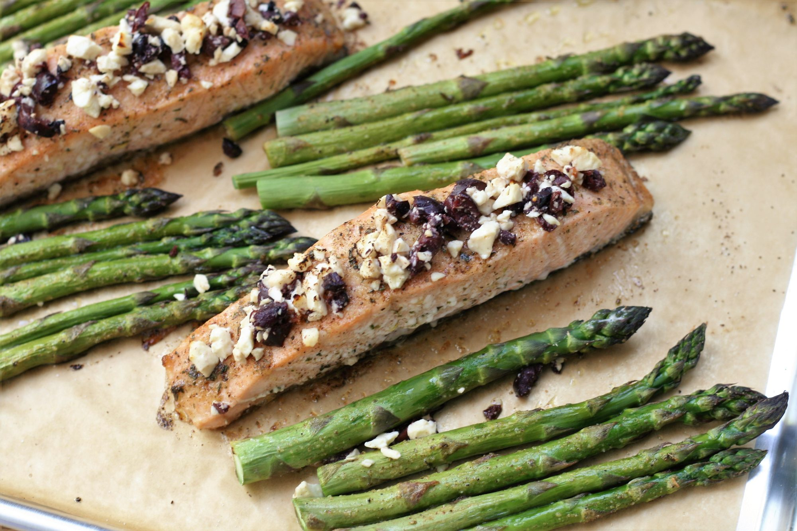

Greek Sheet Pan Salmon and Asparagus
When it comes to weeknight meals, ease and speed are paramount! That’s what’s so great about this sheet pan salmon and asparagus recipe. The salmon is nestled amongst the asparagus so everything can be roasted together. With a quick mustard and maple syrup dressing, dinner couldn’t have gotten any better!. This Greek-inspired one-pan meal is simple to make and perfect for busy weeknights. Guests will love this too! Serve with a side of rice, if desired. I prefer to use thick center-cut pieces of salmon, as they tend to remain more moist. Baking salmon on a sheet pan is an easy, hands-off way of cooking up a large batch of this popular protein. Seasoned with a simple but flavorful spice blend, the leftover fish and asparagus make a versatile base for future meals. Instead of cutting each asparagus spear one at a time, keep the rubber band around the bunch to hold the spears together as you trim off the ends with one stroke of your knife.
List of Ingredients
- 1 ½ salmon fillet.
- ½ teaspoon garlic salt.
- 1 pound fresh asparagus, trimmed.
- 3 tablespoon olive oil
- 2 tablespoons lemon juice
- 2 teaspoons Greek seasoning.
- ¼ cup crumbled feta cheese.
- 2 tablespoons Kalamata olives, pitted and finely chopped
Directions
✓ Step 1
Preheat oven to 400 degrees F (200 degrees C). Line a baking sheet with parchment paper.
✓ Step 2
Cut salmon into 4 even pieces and place in the middle of the prepared sheet pan. Sprinkle with garlic salt. Scatter asparagus around salmon.
✓ Step 3
Stir together olive oil, lemon juice, and Greek seasoning in a small bowl. Combine feta cheese and olives in a second bowl.
✓ Step 4
Brush half the oil mixture over salmon and drizzle the remainder over the asparagus.
✓ Step 5
Bake in the preheated oven until salmon easily flakes with a fork, 12 to 15 minutes, depending on thickness of the salmon. Sprinkle salmon with feta mixture during the last 5 minutes of cooking.